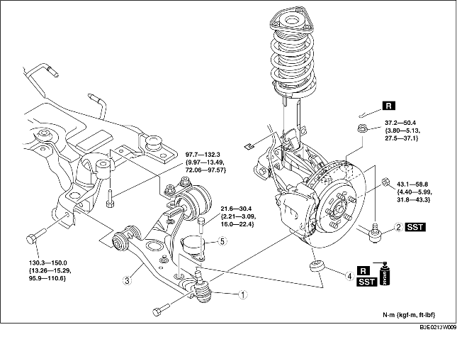

1. Remove in the order indicated in the table.
2. Install in the reverse order of removal.
3. Inspect the wheel alignment and adjust it if necessary. (See FRONT WHEEL ALIGNMENT.)

.
|
1
|
Front lower arm ball joint
|
|
2
|
Tie-rod end ball joint
|
|
3
|
Front lower arm
(See Front Lower Arm Removal Note.)
|
|
4
|
Dust boot
(See Dust Boot Installation Note.)
|
|
5
|
Dynamic damper
|
1. Remove the No.1 engine mount center bolt. (LF engine vehicles)
2. Move the engine and transaxle slightly towards the front side of the vehicle. (LF engine vehicles)
3. Remove the front lower arm rear side bolt.
4. Remove the front lower arm.
1. Wipe the grease off the ball stud.
2. Fill the inside of the new dust boot with grease.
3. Press the boot onto the ball joint using the SST.
4. Wipe away the excess grease.
1. Temporarily install the front lower arm.
2. Install the No.1 engine mount. (LF engine vehicles)
3. Tighten the front lower arm rear side bolt.
4. Tighten the front lower arm front side bolt.
5. Tighten the nut (front lower arm ball joint).